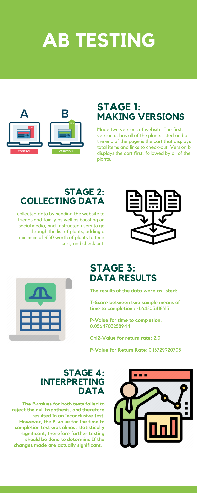

AB Testing

Version A
Checkout cart is located at the bottom of the screen

Version B
Checkout cart is located at the top of the screen
Time To Comlpetion
- Null: The change made between the two versions will have not be signifigant enough to result in a difference in time to completion.
- Alternative: The time to completion will be longer for the page with the cart at the top,
because people will notice their cart filling up faster, and will therefore be more likely to checkout,
which may result in them not hitting the minimum spending requirement and having to go back and purchase more.
Return Rate
- Null: The change made between the two versions will have no significance on the return rate of the two versions.
- Alternative: The return rate of the website with the cart at the beginning (version B) will be more than version a,
since the customer is more aware of how much they are putting in their cart they’ll be less likely to meet the minimum cart requirement the first time,
and therefore will be more likely to return to the shopping page to add more items to their cart.
My data collection process was primarily independent.
For some reason, my website wasn’t included in the list of websites from the studio that students clicked through,
so I had to collect my own data by boosting my website on social media as well as my inner circles.
I think this is more useful data in comparison to collecting data from people in class, because they aren’t
aware of the objectives of the assignment beforehand.

Results may have suffered from limitations due to:
- Unclear instructions to users of interface
- Sample size/ size of population sampled
- Confusion by checkout section of interface because there was no purchase option
General Takeaways:
- Some elements of interfaces are more important than others, and confusion surrounding that element can potentially overshadow
the usability of the elemnt that you are meaning to test
- Some affordnces that the designer has in mind don't translate to the users